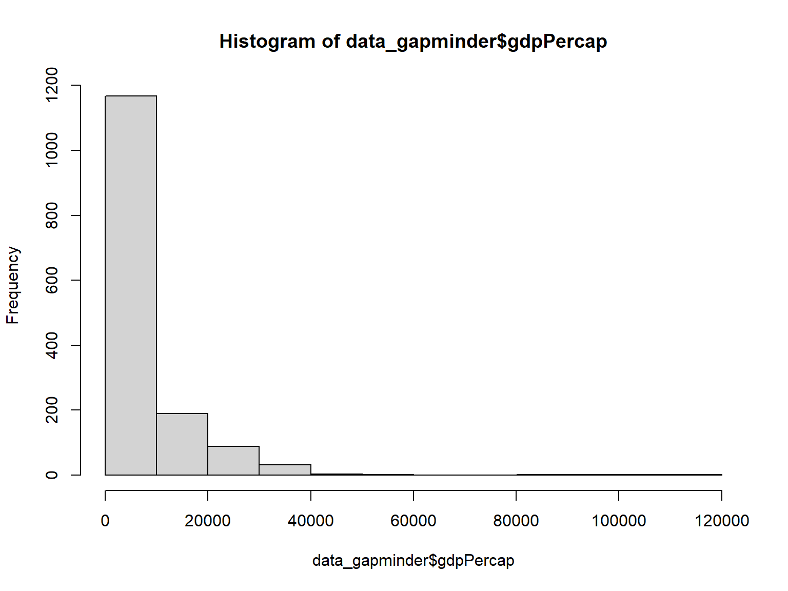
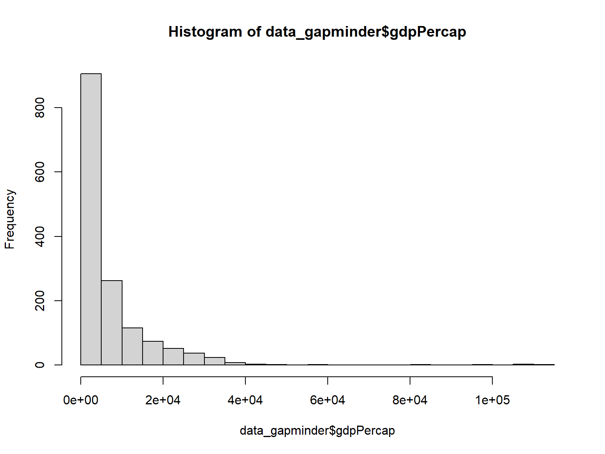
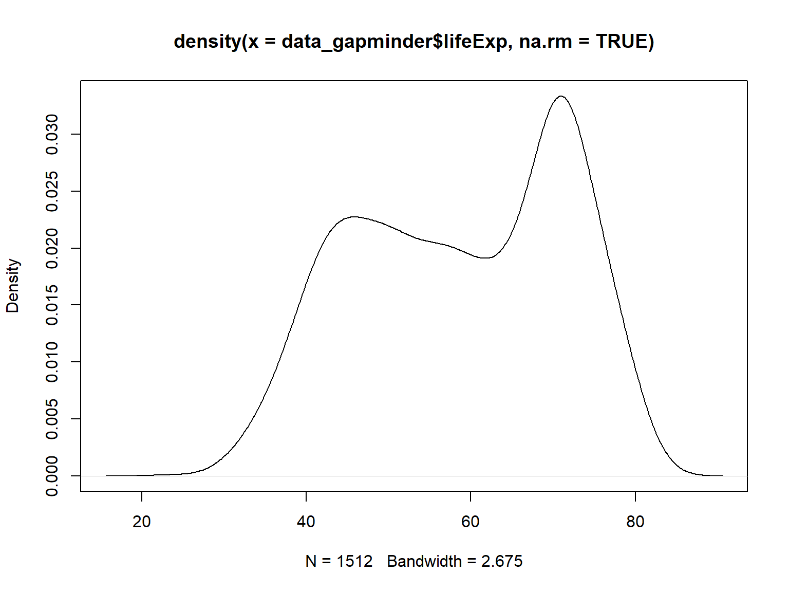
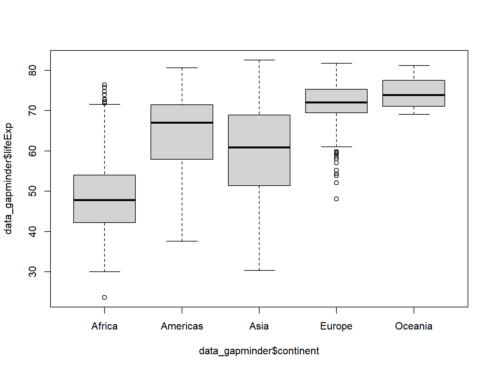
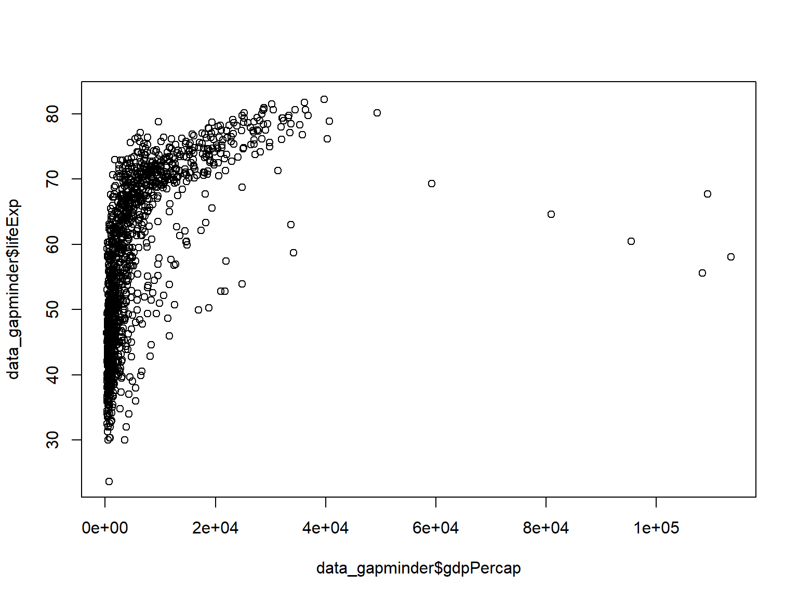
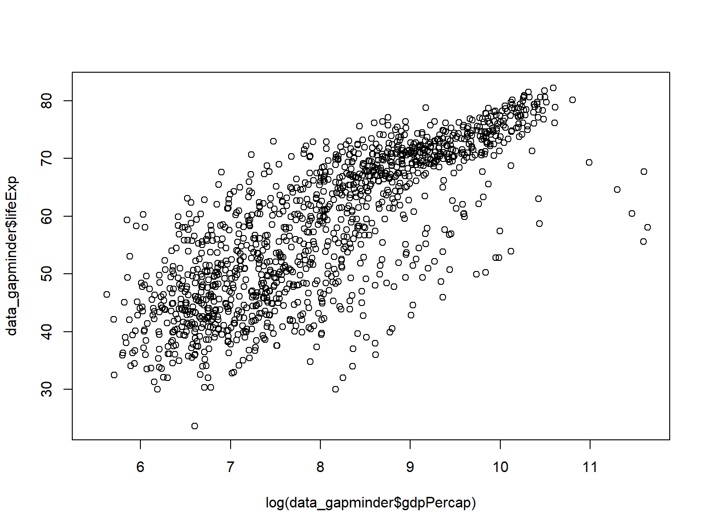

R: Exploring Data
2026-11-11 21:55:26
Getting oriented
- Let’s load the gapminder dataset.
What are missing values
Run
data_gapminderin your consoleNAstands for “not available”, a specialbooleanfor missing data within an objectNA_integer_,NA_real_,NA_complex_andNA_character_NULLused for empty objects (points to the same singleton place in memory), think of it like an object purgatory. It exists and…it doesn’t.Analogous (but perhaps not equivalent to)
SASSSYSMIS
Missingness in R
NA |
NULL |
|
|---|---|---|
| Meaning | A value exists but is unknown | No value at all |
| Length | 1 | 0 |
| Type | logical by default (also NA_integer_,
NA_real_, NA_character_) |
"NULL" |
| In a vector | Keeps its slot: c(1, NA, 3) → 1 NA 3 |
Disappears: c(1, NULL, 3) → 1 3 |
| In calculations | Spreads: NA + 1 → NA |
Returns empty: NULL + 1 → numeric(0) |
| How many exist | Many (each is its own value in memory) | One shared object per session |
tracemem() |
Works | Error: cannot trace NULL |
| Test with | is.na() |
is.null() |
| Typical source | Skipped survey answer, failed conversion | Missing list element, function returning nothing |
How R handles ‘missingness’
# NULL = "nothing here"; NA = "something here, but we don't know what"
x_null <- NULL
x_na <- NA
length(x_null) # 0 -- no object, no slot## [1] 0## [1] 1## [1] "NULL"## [1] "logical"## [1] 1 3## [1] 1 NA 3## [1] TRUE## [1] TRUE## logical(0)## [1] NA## [1] NA## [1] NA## [1] 2Working with missing values
Complete cases
Small rant
## [1] 64.32363## [1] 61.70087Imputation to the rescue?
## [1] 1704## [1] 853Inspecting data
complete_gapminder <- complete.cases(data_gapminder) # for later use
# first few index numbers of complete cases
head(which(complete_gapminder))## [1] 2 3 4 5 8 12Unique values
## [1] "Asia" "Europe" "Africa" "Americas" "Oceania"Duplicated values
## [1] FALSE TRUE TRUE TRUE TRUE TRUE## [1] 1699## [1] FALSE FALSE FALSE FALSE FALSE FALSE## [1] 0Descriptive Statistics
Number of Observations
## [1] 1704## [1] 6## [1] 6## [1] 1704The usual suspects: range, min, max, mean, median, sd, variance, quantiles
range(data_gapminder$year, na.rm = TRUE)
mean(data_gapminder$lifeExp, na.rm = TRUE)
median(data_gapminder$gdpPercap, na.rm = TRUE)
min(data_gapminder$year, na.rm = TRUE)
max(data_gapminder$year, na.rm = TRUE)
quantile(data_gapminder$gdpPercap, na.rm = TRUE)
var(data_gapminder$lifeExp, na.rm = TRUE)
sd(data_gapminder$lifeExp, na.rm = TRUE)Summaries
# kable(summary(data_gapminder$gdpPercap)) # could also summarise just one column
summary(data_gapminder)## country continent year lifeExp pop gdpPercap
## Length :1704 Length :1704 Min. :1952 Min. :23.60 Min. :6.001e+04 Min. : 241.2
## N.unique : 142 N.unique : 5 1st Qu.:1962 1st Qu.:47.83 1st Qu.:2.736e+06 1st Qu.: 1147.4
## N.blank : 0 N.blank : 0 Median :1977 Median :59.63 Median :6.703e+06 Median : 3242.5
## Min.nchar: 4 Min.nchar: 4 Mean :1979 Mean :58.90 Mean :2.835e+07 Mean : 6839.5
## Max.nchar: 24 Max.nchar: 8 3rd Qu.:1992 3rd Qu.:70.60 3rd Qu.:1.836e+07 3rd Qu.: 8533.1
## Max. :2007 Max. :82.60 Max. :1.319e+09 Max. :113523.1
## NAs :217 NAs :192 NAs :223 NAs :219Proper summary
## country continent year lifeExp pop gdpPercap
## Afghanistan: 12 Africa :624 Min. :1952 Min. :23.60 Min. :6.001e+04 Min. : 241.2
## Albania : 12 Americas:300 1st Qu.:1962 1st Qu.:47.83 1st Qu.:2.736e+06 1st Qu.: 1147.4
## Algeria : 12 Asia :396 Median :1977 Median :59.63 Median :6.703e+06 Median : 3242.5
## Angola : 12 Europe :360 Mean :1979 Mean :58.90 Mean :2.835e+07 Mean : 6839.5
## Argentina : 12 Oceania : 24 3rd Qu.:1992 3rd Qu.:70.60 3rd Qu.:1.836e+07 3rd Qu.: 8533.1
## Australia : 12 Max. :2007 Max. :82.60 Max. :1.319e+09 Max. :113523.1
## (Other) :1632 NAs :217 NAs :192 NAs :223 NAs :219Exploring data in DPLYR: A better way to do data
mean_life | sd_life | min_life | max_life |
|---|---|---|---|
58.9021 | 12.85151 | 23.599 | 82.603 |
Code for prior slide’s table
data_gapminder %>%
summarise(
mean_life = mean(lifeExp, na.rm = TRUE),
sd_life = sd(lifeExp, na.rm = TRUE),
min_life = min(lifeExp, na.rm = TRUE),
max_life = max(lifeExp, na.rm = TRUE)
) %>% flextable() %>% flextable::theme_vanilla() %>%
flextable::autofit() %>% # adjusts columns to content
flextable::set_table_properties( # ensures full-width fit
width = 1,
layout = "autofit"
)Exploring data in DPLYR: groups
data_gapminder %>%
# `group_by` this automatically groups things by class for you very powerful
group_by(continent) %>%
summarise(
mean_life = mean(lifeExp, na.rm = TRUE),
n = n()
)## # A tibble: 5 × 3
## continent mean_life n
## <fct> <dbl> <int>
## 1 Africa 48.6 624
## 2 Americas 64.3 300
## 3 Asia 59.6 396
## 4 Europe 71.7 360
## 5 Oceania 74.5 24Exploring data PURRRfectly: functional programming
## $Africa
## [1] 48.62973
##
## $Americas
## [1] 64.32363
##
## $Asia
## [1] 59.62585
##
## $Europe
## [1] 71.74504
##
## $Oceania
## [1] 74.47852Visualizing Distributions

Histograms

:::notes You can plot a basic histogram withhist()
Plotting for presentation will be covered in greater detail in a future
session. Basic plotting for distribution analysis is relatively straight
forward in base R. :::
Histograms cont’d

:::notes And you can increase the ‘buckets’ with thebreaks
argument :::
Density Plots

:::notes A density plot can be generated withplot(), but
requires the extra step of computing the density of the data with the
density() function first ::: # Distribution of Two
Variables

Box Plots
 :::notes
:::notes boxplot() allows you to facet one variable by
another using a tilde ~ to define the relationship :::
Scatter Plots

Data transformations for better visualisation

References
- Data Camp - Data Camp
- Cran R Project Symbols - R Internal Documentation